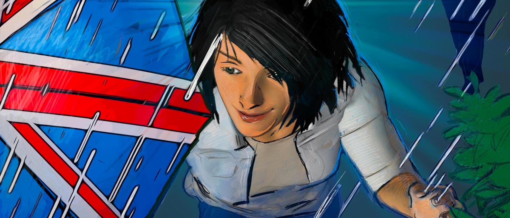
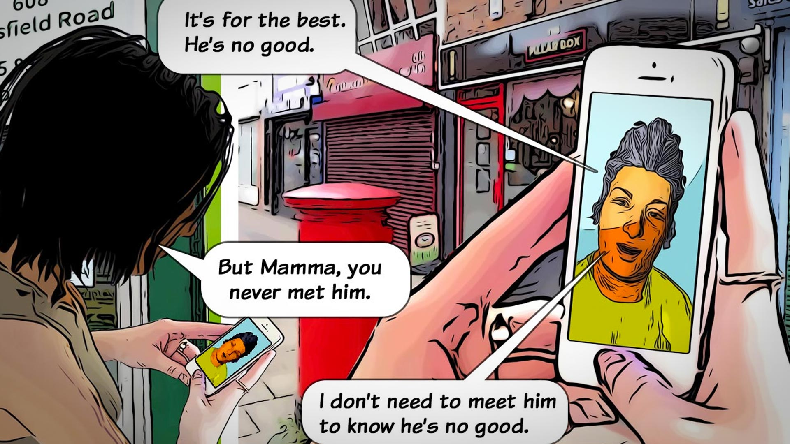
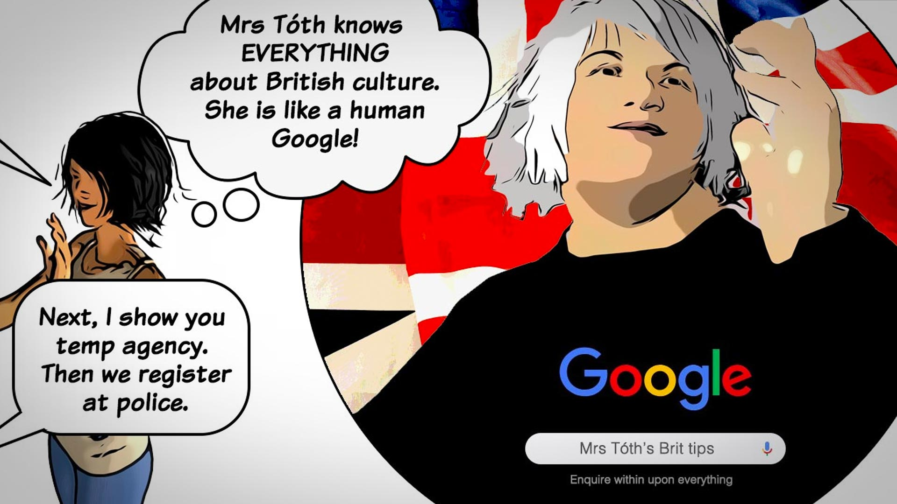
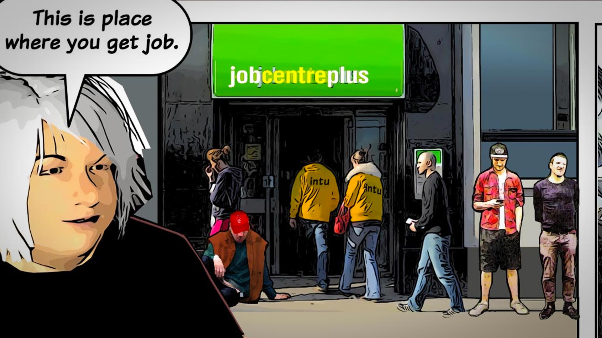
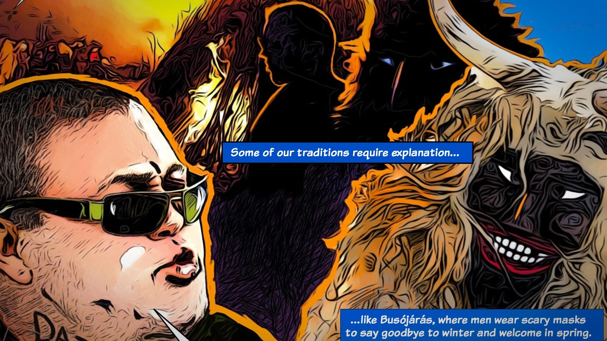
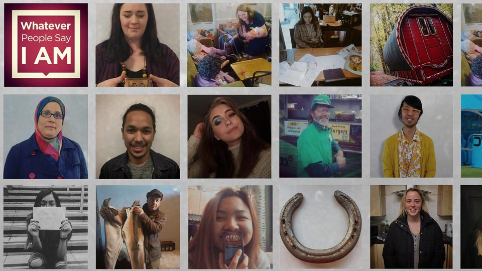
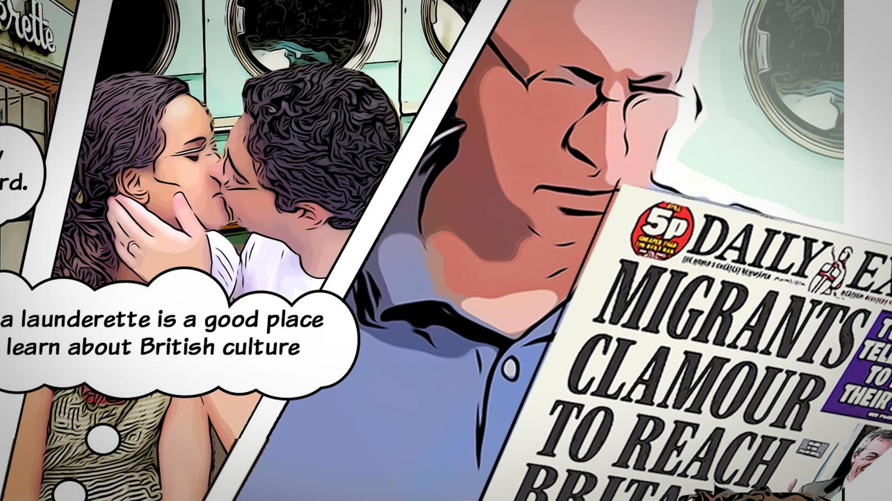

Challenging stereotypes through comics
Feature - Paul Fillingham, 2021
Whatever People Say I Am is the natural successor to Dawn of the Unread, the Guardian Award-winning graphic novel produced by James Walker and Paul Fillingham. The fourth comic in the Whatever... series is the first time that Walker and Fillingham have worked together as writer and comic book artist.
Like its predecessor, this latest collection of comic stories is the work of multiple collaborators. Each comic is accompanied by themed essays which tackle the issues of prejudice at a time of growing cultural intolerance. Whether this polarisation is the result of the Brexit vote, the influence of social media, or the growth of an increasingly autocratic political class is a moot point.

Even before the pandemic - when these stories were written - technologies like Skype, Facetime and WhatsApp were already normalising screen-based communication. In the comic, the key protagonist Korola appears to build an even closer relationship with her mother over the phone than she had face-to-face in her home country. Mobile technology also features in other Whatever... titles.

Korola's introduction to British culture is facilitated by Mrs Toth, a human Google who offers her guests essential tips on getting a job, how to get around, and how to pass the UK citizen test.
Comic art is a perfect medium for embedding hidden treats for readers to discover. The comic panel depicting a local Job Centre contains a number of easter eggs. In the tech world, easter egg is the term used to describe a hidden software surprise - commonly a joke, message or a feature that hasn't been documented. The comic-strip genre often contains hidden details that reveal themselves with subsequent readings.

The Job Centre panel is a classic example of this kind of subversion, featuring former Intu (Broadmarsh) shopping centre security staff - unfortunate victims of the retail giant's collapse - the ghost of Apple founder Steve Jobs in his distinctive sweater and jeans, and a cameo appearance by Nottingham's post-punk music duo the Sleaford Mods, who featured in an earlier Thinkamigo project, the Sillitoe Trail. Writer Alan Sillitoe is responsible for the title "Whatever people say I am, that's what I'm not".

The immigrant community's informal support network is shown embracing the British tradition of keeping allotments, a practice thought to extend back to Saxon times. These green spaces provide reflection, camaraderie and a safe environment to engage in Hungarian traditions such as Busojares, where masked figures gather around campfires to drink and chase away the spirit of winter.
The third and fourth comics in the series - Refugee and Immigrant respectively - were supported by Nottinghamshire Police and Crime Commissioner Paddy Tipping and Nottingham Trent University. The comics and essays are an extension of research by Loretta Trickett into crime and victimisation, and provide a vehicle for James Walker's innovative approach to education and digital storytelling.

Whatever... is augmented by an Instagram channel that serves as a kind of confessional space where individuals can talk about an unusual aspect of their life or perhaps a possession that has special significance to them, reinforcing the overarching principle of challenging stereotypes.

There are some challenging topics in Whatever... Whilst digitising content for issue three, we learned about the harrowing experiences of Syrian refugees, forced to abandon their careers, their relations and beautiful homes. The before-and-after snapshots contrasting idyllic gardens with piles of grey rubble are extremely powerful, evoking empathy and sorrow - the very opposite of the angry sentiment expressed by xenophobic newspapers.
Forget the tabloid press, read the comics instead and dive deep into the featured essays for the background to the stories,